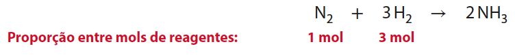
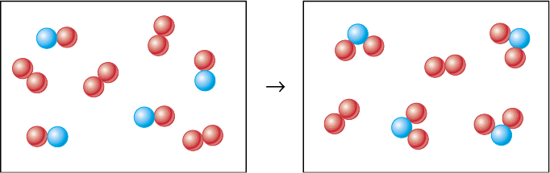

Excesso de reagente
Consideremos novamente, como exemplo, a reação química de síntese da amônia, que pode ser assim equacionada:
1 N₂ (g) + 3 H₂ (g) → 2 NH₃ (g)
Para cada molécula de N₂ que reage, três moléculas de H₂ reagem também. Assim, há uma proporção entre as quantidades de moléculas que participam da reação e, por conseguinte, uma proporção entre as quantidades em mols. A proporção entre os reagentes é:
1 mol de N₂ : 3 mol de H₂
Para uma dada quantidade de N₂, se estiver presente mais H₂ que o necessário, as moléculas de H₂ em excesso não reagirão porque não há moléculas disponíveis de N₂ para reagir com elas. Nesse caso, dizemos que existe excesso do reagente gás hidrogênio. O excesso de um reagente permanece sem reagir.
Podemos avaliar a presença de excesso consultando a proporção em mols, expressa pelos coeficientes estequiométricos.

Se as quantidades em mols dos reagentes estiverem presentes exatamente na proporção estequiométrica, então dizemos que não há excesso de nenhum deles.
Contudo, se eles não estiverem presentes nessa proporção, então um deles estará em excesso. Por exemplo, se a mistura de reagentes contiver 10 mol de N₂ e 40 mol de H₂, haverá excesso de 10 mol de H₂. E, se a mistura de reagentes contiver 20 mol de N₂ e 30 mol de H₂, haverá excesso de 10 mol de N₂.
Chamamos de reagente limitante o reagente que pode ser consumido totalmente em uma reação química. Após o consumo do reagente limitante, não existe a possibilidade de a reação prosseguir. Por outro lado, chamamos de reagente em excesso o reagente existente em quantidade superior à necessária para reagir com a quantidade existente do reagente limitante.
Podemos verificar se existe excesso de um reagente consultando a proporção em mols entre os reagentes, como acabamos de mostrar. Também podemos usar a proporção entre as massas dos reagentes, como mostraremos agora.
N₂ + 3 H₂ → 2 NH₃

Assim, por exemplo, se a mistura de reagentes contiver 14 g de N₂ e 3 g de H₂, ambos os reagentes estarão na proporção estequiométrica.
Porém, se a mistura de reagentes contiver 14 g de N₂ e 5 g de H₂, haverá excesso de 2 g de H₂. E, se a mistura de reagentes contiver 16 g de N₂ e 3 g de H₂, haverá excesso de 2 g de N₂.
Dialogando com o texto
Uma pequena empresa comercializa produtos de higiene pessoal. Seus colaboradores embalam três sabonetes e um xampu em uma única caixa, formando um conjunto que é vendido aos consumidores.
Essa empresa não fabrica sabonete nem xampu; ela os compra de outras empresas. Cada sabonete incorporado ao conjunto tem massa 100 g (produto mais embalagem) e o xampu tem massa 500 g (produto mais embalagem).
Chegou um carregamento com 8 kg de sabonetes e 10 kg de xampus.
Um colaborador da empresa, ao receber o carregamento, comentou com outro: “Chegaram mais xampus do que sabonetes. Vai sobrar xampu!”
Sobrarão xampus, sobrarão sabonetes ou eles estão na proporção adequada para a elaboração dos conjuntos?
Exercícios
14. Observe os seguintes modelos que representam, em nível atômico-molecular, um sistema gasoso antes e depois da ocorrência de uma reação química. As esferas vermelhas representam átomos do elemento químico oxigênio e as azuis, átomos do elemento químico nitrogênio.

Representação esquemática em que os átomos estão representados por esferas em tamanho ampliado algumas dezenas de milhões de vezes. Cores meramente ilustrativas. Fora de proporção.
- a. Equacione a reação química envolvida.
- b. Há algum reagente em excesso? Em caso afirmativo, qual é ele? Em caso negativo, justifique como concluiu.
15. Considere a reação química de síntese da água pela reação entre os gases hidrogênio e oxigênio.
- a. Quantos mols de água podem ser obtidos a partir de uma mistura que contenha 10 mol de cada reagente?
- b. Qual o reagente em excesso?
16. Em uma das etapas da fabricação do ácido nítrico, a amônia reage com o oxigênio de acordo com a seguinte equação:
4 NH₃ (g) + 5 O₂ (g) → 4 NO (g) + 6 H₂O (g)
Ao empregar 10 mol de amônia e 15 mol de gás oxigênio:
- a. qual a quantidade em mols de NO que se poderá obter?
- b. haverá reagente em excesso? Explique.
17. O bicarbonato de amônio, NH₄HCO₃, é um sal usado como fermento nas fábricas de biscoito. Sua produção industrial envolve a reação, sob condições apropriadas, de amônia, água e dióxido de carbono, de acordo com a equação:
NH₃ (aq) + H₂O ( l) + CO₂ (aq) → NH₄HCO₃ (s)
Deseja-se produzir o sal a partir de 55 g de amônia, 110 g de dióxido de carbono e de quanta água for necessária.
- a. Qual dos reagentes, amônia ou dióxido de carbono, está em excesso? (Consulte a tabela periódica no final deste livro para obter os dados eventualmente necessários.)
- b. Qual a massa de água que reagirá?
- c. Qual a massa de sal produzido?